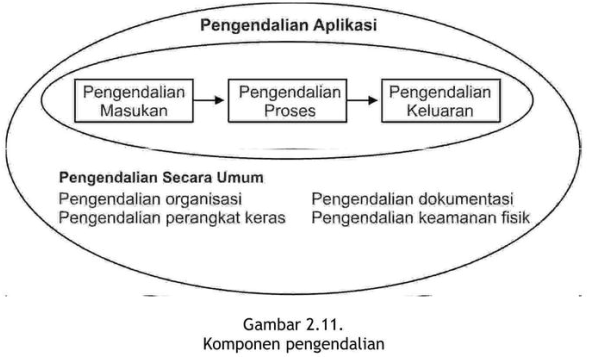

üìò KEGIATAN BELAJAR 2
KOMPONEN-KOMPONEN SISTEM INFORMASI
 Apakah komponen pada Gambar 2.4 sudah cukup ❓
Apakah komponen pada Gambar 2.4 sudah cukup ❓
- Perlu komponen menyimpan data yang belum diolah (basis data), sehingga membentuk Gambar 2.5.
Apakah komponen pada Gambar 2.5 sudah cukup ❓
- Bagaimana menghasilkan informasi yang relevan? Perlu model
- Bagaimana menghasilkan informasi yang tepat waktu? Perlu teknologi
- Bagaimana menghasilkan informasi yang akurat? Perlu kontrol
- Sehingga modelnya kita perluas menjadi Gambar 2.6:

A. KOMPONEN INPUT:
- Bahan dasar untuk diolah menjadi informasi
- Most data an organization uses as input to its Information system are generated and collected within the organization.
- These data elements result from transactions undertaken in the course of doing business. A transaction is a business event: a sale, a purchase, a payment, the hiring of a new employee, and the like. T
- These transactions can be recorded on paper and later entered into a computer system; directly recorded through a transaction processing systems (TPS), such as a point-of-sale (POS) machine, scanner, or camera; or captured online when someone transacts through the web.
- A TPS is any system that records transactions.
- Often, the same system also processes the transactions, summarizing and routing information to other systems; therefore, these systems are transaction processing systems, not just transaction recording systems.
- External data sources can also be used by organisations such as :
- Customers, competitors, and suppliers
- Government agencies and financial institutions
- Labor and population statistics
- Economic conditions
B. KOMPONEN OUTPUT:
- Informasi yang berguna sesuai konteksnya.
- The information an IS displays in the format most useful to an organization.
- The most widely used output device is the video display, or video monitor, which displays output visually.
- Another common output device is the printer, used to print hard copies of information on paper.
- However, computers can communicate output through speakers in the form of music or speech and also can transmit it to another computer or electronic device in computer-coded form, for later interpretation.
C. KOMPONEN BASIS DATA:
- A database, the heart of an information system, is a collection of all relevant data organized in a series of integrated files.
- To create, organize, and manage databases, a database management system (DBMS) is used, such as Microsoft Access or FileMaker Pro for home or small-office use. In a large organization, a DBMS such as Oracle or IBM DB2 might be used.
D. KOMPONEN MODEL: model logika, model matematika
E. KOMPONEN TEKNOLOGI: mempercepat proses pengolahan data
F. KOMPONEN KONTROL: menjamin informasi yang dihasilkan oleh sistem informasi akurat

G. KOMPONEN MANUSIA